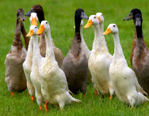

If you are a gardener or farmer, or have a pond or stream on your property, ducks can be valuable allies in natural pest control. Watching these feathered vacuum cleaners enthusiastically hunting for and devouring pests both on land and in water is extremely satisfying to anyone who has struggled to find practical and safe methods to control the harm done by garden and farm pests.
These web-footed omnivores are tireless consumers of slugs, snails and a wide array of bothersome - and potentially dangerous - insects and grubs, including (but not limited to) mosquito pupae, Japanese beetle larvae, potato beetles and grasshoppers. In areas plagued by liver flukes, ducks can eliminate the problem by consuming the snails that are the intermediate host of this troublesome parasite of mammals. With the variety of diseases that mosquitoes can spread among avian and mammalian species, the duck’s ability to stop mosquitoes at the non-feeding pupa stage is significant.
The value of ducks to those of us who tend gardens and farms is not limited to pest control. Ducks provide valuable plant food via their manure and feathers (worms find molted feathers delicious, pulling them into their holes as they consume them). Garden-raised ducks can supply nutritious eggs and meat for the table.
Ducks are hardy and resistant to many diseases and parasites. They adapt well to virtually all climates including the cold north, dry deserts and the wettest tropical rainforests. Plus, they can be highly entertaining, and many people find them to be good garden and farmstead companions. Unlike chickens and guineas - that seem to have springs in their legs - most ducks can be easily penned with 18- to 24-inch-high barriers. For duck breeds that can fly, clipping the ten primary flight feathers of one wing annually will keep them grounded.
For decades, we have kept ducks in the garden during the non-growing season so they can clean out unwanted pests before the new crops are planted. When the garden is planted, we like to keep the plumed patrol around the perimeter where they can intercept migrating slugs, snails and insects. After seedlings are of sufficient size that they are not easily trampled or snacked on by foraging fowl, the ducks can be let into the garden while you work there and can keep an eye on your avian partners. When you are ready to leave, the ducks can be enticed to their pen with feed or easily herded. (Yes, ducks are easy to herd, unlike chickens or guineas that tend to scatter in all directions.)
Because of so many variables, it is impossible to give an exact number of ducks that should be employed in your garden. However, two to four ducks for every 500 to 1,000 square feet of garden can be used as a general guideline.
We have raised and studied many breeds of domestic ducks here at Holderread Waterfowl Farm & Preservation Center. Though the classifications are a bit flexible, we’ve grouped them according to their foraging ability as follows.
The “elite” foraging group includes the Dutch Hook Bill, Indian Runner, Campbell, Australian Spotted, Mini Appleyard and Silky Duck.
The “excellent” foraging class consists of the Welsh Harlequin, Magpie, Ancona, Bali, East Indie and female Muscovy.
The “good” foraging category includes the Cayuga, Crested, Call, Swedish, Orpington (often called Buff Ducks), Appleyard, Saxony and production or farm-type Rouen.
In the “fair” foraging division are the Pekin, Aylesbury, exhibition-type Rouen and male Muscovy.
From my observations, food-producing systems that provide the highest levels of sustainability and productivity mimic ecosystems found in nature by incorporating both plants and animals. After gardening and raising ducks for half a century, I find it hard to envision one without the other. Gardens and ducks are a natural fit.
If you’re ready to pick a breed and order some ducklings, check Holderread Waterfowl Farm & Preservation Center and the Mother Earth News Chicken and Hatchery Finder.
|
 ISTOCKPHOTO/JEFF GYNANE Indian Runner ducks are among the best foragers, gobbling hordes of pesky bugs every day. |
|
|